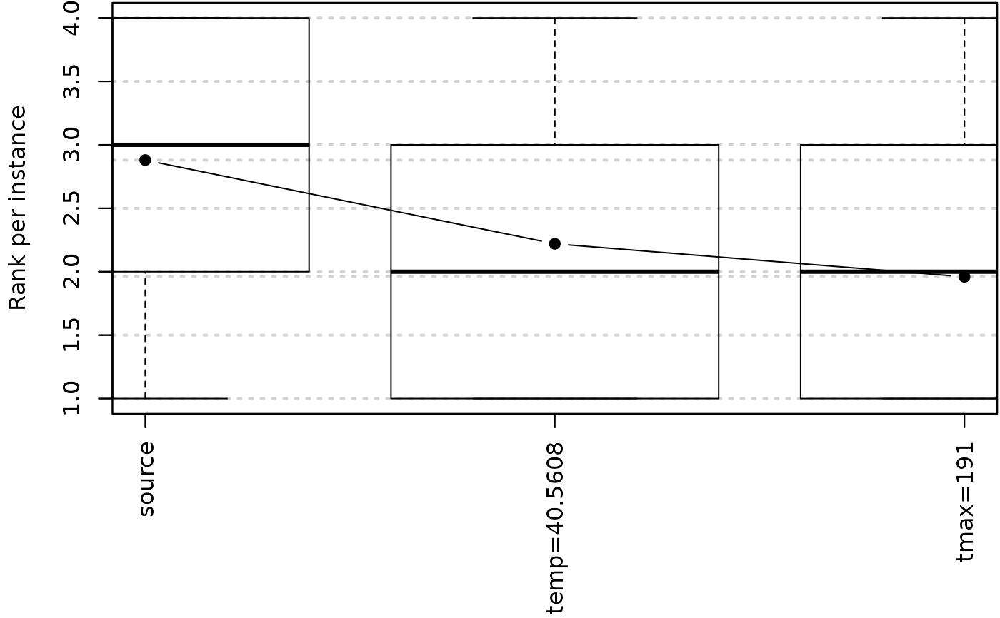
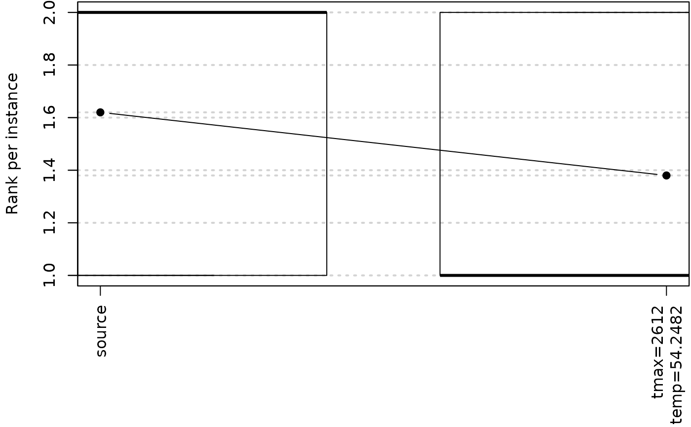

Performs ablation between two configurations (from source to target).
Source:R/ablation.R
ablation.RdAblation is a method for analyzing the differences between two configurations.
Usage
ablation(
iraceResults,
src = 1L,
target = NULL,
ab_params = NULL,
type = c("full", "racing"),
nrep = 1L,
seed = 1234567L,
ablationLogFile = "log-ablation.Rdata",
instancesFile = "train",
...
)Arguments
- iraceResults
list()|character(1)
Object created by irace and typically saved in the log fileirace.Rdata. If a character string is given, then it is interpreted as the path to the log file from which theiraceResultsobject will be loaded.- src, target
integer(1)|character(1)
Source and target configuration IDs. By default, the first configuration ever evaluated (ID 1) is used assrcand the best configuration found by irace is used as target. If the argument is a string, it is interpreted as the path to a file, with the format specified byreadConfigurationsFile(), that contains the configuration.- ab_params
character()
Specific parameter names to be used for the ablation. They must be inparameters$names. By default, use all parameters.- type
"full"|"racing"
Type of ablation to perform:"full"will execute each configuration on alln_instancesto determine the best-performing one;"racing"will apply racing to find the best configurations.- nrep
integer(1)
Number of replications per instance used in"full"ablation. Whennrep > 1, each configuration will be executednreptimes on each instance with different random seeds.- seed
integer(1)
Integer value to use as seed for the random number generation.- ablationLogFile
character(1)
Log file to save the ablation log. IfNULL, the results are not saved to a file.- instancesFile
character(1)
Instances file used for ablation:'train','test'or a filename containing the list of instances.- ...
Further arguments to override scenario settings, e.g.,
debugLevel,parallel, etc.
Value
A list containing the following elements:
- allConfigurations
Configurations tested in the ablation.
- state
State of the ablation process.
- experiments
A matrix with the results of the experiments (columns are configurations, rows are instances).
- scenario
Scenario object with the settings used for the experiments.
- trajectory
IDs of the best configurations at each step of the ablation.
- best
Best configuration found in the experiments.
- complete
TRUEif the ablation process was completed.
References
C. Fawcett and H. H. Hoos. Analysing differences between algorithm configurations through ablation. Journal of Heuristics, 22(4):431–458, 2016.
Examples
# \donttest{
logfile <- system.file(package="irace", "exdata", "sann.rda")
# Execute ablation between the first and the best configuration found by irace.
ablog <- ablation(logfile, ablationLogFile = NULL)
#> # Using 'train' instances:
#> 0.879733047337967
#> 0.88346251461134
#> 0.89181285674107
#> 0.917735837444429
#> 0.870477416296315
#> 0.885103570702204
#> 0.89202334174329
#> 0.905956108238348
#> 0.899255497326861
#> 0.904261481989036
#> 0.871372827551886
#> 0.905361495462969
#> 0.897792186921715
#> 0.892437347973119
#> 0.887195188382949
#> 0.917853533266646
#> 0.910228549332108
#> 0.906453859925829
#> 0.900641947633513
#> 0.913188818015185
#> 0.891666231274476
#> 0.877116323751387
#> 0.890619013379739
#> 0.874699573218299
#> 0.900616774863984
#> 0.881006209020308
#> 0.892948895502799
#> 0.885993590992289
#> 0.912686472504244
#> 0.89677134192179
#> 0.909942756947644
#> 0.906027296740565
#> 0.939297560222342
#> 0.91114920969152
#> 0.91196461434329
#> 0.893592668026016
#> 0.915332954964009
#> 0.875696471228792
#> 0.889914790798769
#> 0.887102011572907
#> 0.906851991540693
#> 0.918690352947159
#> 0.885665534314335
#> 0.858724627409789
#> 0.880195893059985
#> 0.895511010366392
#> 0.898749579163695
#> 0.928106493886822
#> 0.866395909963976
#> 0.867383245092458
#> # 2025-02-27 15:29:00 UTC: Starting ablation from 1 to 128
#> # Seed: 1234567
#> # Source configuration (row number is ID):
#> tmax temp
#> 1 1674 22.9982
#> # Target configuration (row number is ID):
#> tmax temp
#> 128 191 40.5608
#> # 2025-02-27 15:29:00 UTC: Executing source and target configurations on the given instances * nrep (50)...
#> # Generating configurations (row number is ID): tmax temp
#> tmax temp
#> 3 191 22.9982
#> 4 1674 40.5608
#> # 2025-02-27 15:29:03 UTC: Ablation (full) of 2 configurations on 50 instances (this may take a while ...).
#> # Best changed parameters:
#> # temp : 22.9982 -> 40.5608
#> # 2025-02-27 15:29:05 UTC: Final best configuration:
#> tmax temp
#> 2 191 40.5608
plotAblation(ablog)

# Execute ablation between two selected configurations, and selecting only a
# subset of parameters, directly reading the setup from the irace log file.
ablog <- ablation(logfile, src = 1, target = 10,
ab_params = c("temp"), ablationLogFile = NULL)
#> # Using 'train' instances:
#> 0.879733047337967
#> 0.88346251461134
#> 0.89181285674107
#> 0.917735837444429
#> 0.870477416296315
#> 0.885103570702204
#> 0.89202334174329
#> 0.905956108238348
#> 0.899255497326861
#> 0.904261481989036
#> 0.871372827551886
#> 0.905361495462969
#> 0.897792186921715
#> 0.892437347973119
#> 0.887195188382949
#> 0.917853533266646
#> 0.910228549332108
#> 0.906453859925829
#> 0.900641947633513
#> 0.913188818015185
#> 0.891666231274476
#> 0.877116323751387
#> 0.890619013379739
#> 0.874699573218299
#> 0.900616774863984
#> 0.881006209020308
#> 0.892948895502799
#> 0.885993590992289
#> 0.912686472504244
#> 0.89677134192179
#> 0.909942756947644
#> 0.906027296740565
#> 0.939297560222342
#> 0.91114920969152
#> 0.91196461434329
#> 0.893592668026016
#> 0.915332954964009
#> 0.875696471228792
#> 0.889914790798769
#> 0.887102011572907
#> 0.906851991540693
#> 0.918690352947159
#> 0.885665534314335
#> 0.858724627409789
#> 0.880195893059985
#> 0.895511010366392
#> 0.898749579163695
#> 0.928106493886822
#> 0.866395909963976
#> 0.867383245092458
#> # 2025-02-27 15:29:05 UTC: Starting ablation from 1 to 10
#> # Seed: 1234567
#> # Source configuration (row number is ID):
#> tmax temp
#> 1 1674 22.9982
#> # Target configuration (row number is ID):
#> tmax temp
#> 10 2612 54.2482
#> # 2025-02-27 15:29:05 UTC: Executing source and target configurations on the given instances * nrep (50)...
#> # 2025-02-27 15:29:07 UTC: Final best configuration:
#> tmax temp
#> 2 2612 54.2482
plotAblation(ablog)

# }